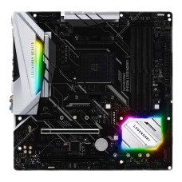
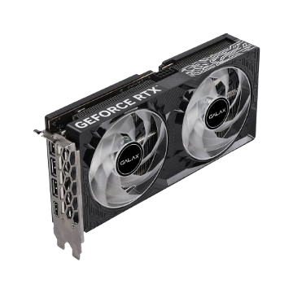
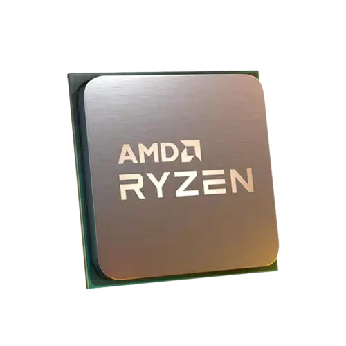
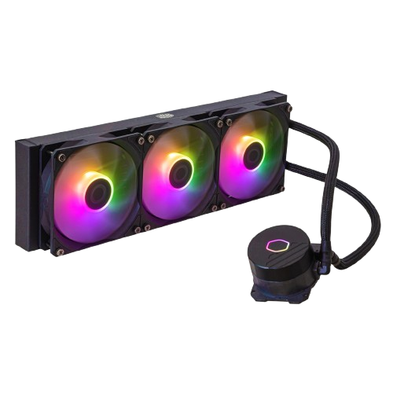
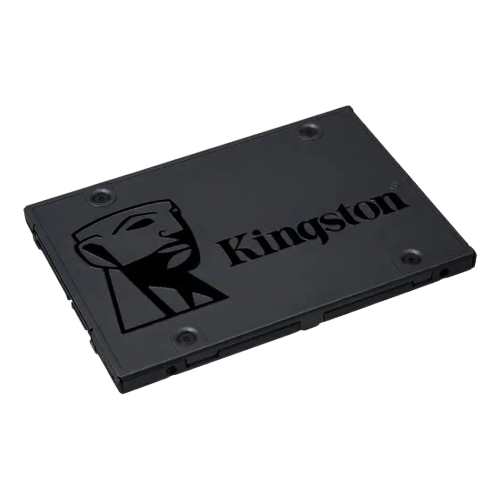
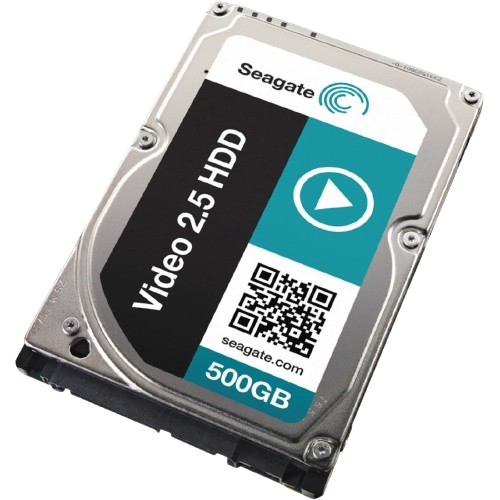

🌐 Sistemas Operacionais e Arquitetura de Computadores
No mundo da informática, dois pilares fundamentais garantem o funcionamento de qualquer computador: os Sistemas Operacionais e a Arquitetura de Computadores. Entender esses temas é essencial para quem deseja seguir carreira em tecnologia ou simplesmente compreender melhor como as máquinas funcionam.
🔹 Sistemas Operacionais
O Sistema Operacional (SO) é o "cérebro" que faz a ponte entre o usuário e o hardware. Ele é responsável por gerenciar recursos, controlar dispositivos e oferecer uma interface prática para que possamos utilizar o computador.
Em nossos cursos, você aprenderá:
O que é um sistema operacional e quais são suas funções.
Diferenças entre sistemas como Windows, Linux e macOS.
Conceitos de processos, memória, arquivos e segurança.
Como o SO garante que tudo funcione de forma organizada e eficiente.
👉 Em resumo: sem um sistema operacional, seu computador seria apenas um monte de peças sem coordenação!
🔹 Arquitetura de Computadores
Se o sistema operacional é o "cérebro", a Arquitetura de Computadores é o "corpo" que dá suporte a tudo. Essa área estuda como os componentes de um computador são estruturados e interagem entre si.
Nosso conteúdo abrange:
Conceitos de hardware, processadores e memórias.
Como funciona o ciclo de instrução (busca, decodificação e execução).
Diferença entre arquiteturas RISC e CISC.
A importância da comunicação entre CPU, memória e periféricos.
👉 Entender arquitetura é como abrir o computador e enxergar a engrenagem que torna possível rodar jogos, programas e sistemas complexos.
🚀 Por que estudar essas áreas?
Base sólida para qualquer carreira em TI, programação e redes.
Maior compreensão de como funcionam os dispositivos que usamos todos os dias.
Preparação para desafios práticos, desde montar PCs até entender a fundo servidores e sistemas de alto desempenho.
hardwares
Placa mae

Uma placa-mãe (ou motherboard) é a principal placa de circuito num computador, servindo como a "espinha dorsal" do sistema que conecta e permite a comunicação entre todos os componentes internos, como o processador, memória RAM e placa gráfica, além de fornecer portas para periféricos externos, como USB e áudio. Ela é essencial para o funcionamento do PC, pois define os recursos e as limitações do sistema, incluindo a capacidade de expandir hardware e conectar dispositivos.
Funções principais da placa-mãe:
Conexão de componentes:
Conecta todos os componentes internos do computador (processador, memória, armazenamento, placa gráfica) através de slots e soquetes.
Comunicação entre hardware:
Permite que os diferentes componentes se comuniquem e troquem informações entre si.
Conectividade:
Oferece portas e conectores para dispositivos externos, como portas USB, áudio e Ethernet, além de slots de expansão para adicionar novas funcionalidades.
Determinação de recursos:
A placa-mãe define os recursos que o PC suporta, como tipo de memória, opções de armazenamento e conectividade, como Wi-Fi e Bluetooth integrados.
👉 Em resumo: a placa-mãe é o centro nervoso do computador. Entender como ela funciona é fundamental para montar, manter e otimizar qualquer máquina, seja para estudos, trabalho ou jogos.
Memoria Ram
A memória RAM (Random Access Memory ou Memória de Acesso Aleatório) é um componente essencial em computadores e dispositivos eletrônicos. É um tipo de memória volátil, o que significa que seus dados são armazenados temporariamente e perdidos quando o dispositivo é desligado. A RAM atua como um espaço de trabalho rápido para o processador, onde os dados e instruções dos programas em execução são armazenados, permitindo acesso rápido e eficiente.
Mais detalhes:
Armazenamento temporário:
A RAM armazena dados e instruções de programas que estão sendo usados ativamente pelo processador. Isso permite que o computador acesse informações rapidamente, ao invés de ter que buscar tudo no disco rígido ou SSD a cada instante.
Velocidade:
A RAM é muito mais rápida do que outros tipos de memória, como o disco rígido ou SSD. Isso significa que o processador pode acessar os dados armazenados na RAM com muito mais rapidez, resultando em um desempenho geral mais rápido do sistema.
Volatilidade:
A principal característica da RAM é sua volatilidade. Quando o computador é desligado, a energia da RAM é cortada e todos os dados armazenados são perdidos. Por isso, é importante salvar o trabalho regularmente em um armazenamento permanente (disco rígido ou SSD).
Importância para o desempenho:
A capacidade da RAM é crucial para o desempenho do computador, especialmente em tarefas que exigem muitos recursos, como jogos, edição de vídeo ou multitarefa.
Tipos de RAM:
Existem diferentes tipos de RAM, como DDR3, DDR4 e DDR5, sendo que cada geração oferece maior desempenho e eficiência.
Placa de video

Uma placa de vídeo (também conhecida como placa gráfica ou GPU) é um componente de hardware essencial para um computador que gera e exibe imagens no monitor, transformando dados computacionais em conteúdo visual. Ela é responsável por processar cálculos matemáticos complexos para renderizar gráficos 2D e 3D, sendo crucial para jogos, criação de conteúdo 3D e outras aplicações que exigem alta qualidade gráfica, além de permitir o funcionamento de tecnologias como a inteligência artificial.
Funções e Importância
Geração de Imagens:
A função principal é processar e gerar as imagens que você vê na tela, desde a navegação na internet até vídeos complexos e jogos de alta demanda gráfica.
Desempenho Visual:
Melhora o desempenho do computador ao cuidar do processamento de imagem, liberando a CPU (Unidade Central de Processamento) para outras tarefas.
Experiência de Jogos e Criação:
É fundamental para jogadores e profissionais que trabalham com programas pesados de edição de vídeo e imagem, modelagem 3D e animação, pois garante que os gráficos sejam nítidos e que as tarefas sejam executadas de forma fluida.
Como Funciona
Processamento Gráfico Dedicado:
Possui núcleos especializados para executar comandos gráficos com grande velocidade, realizando cálculos necessários para renderizar a imagem com precisão.
Desempenho em Frames:
Determina a quantidade de imagens exibidas por segundo (fps), o que impacta a fluidez da experiência visual.
Tipos de Placas de Vídeo
Placas Integradas:
Vêm embutidas no processador e são adequadas para tarefas básicas, como navegar na web e assistir a vídeos.
Placas Dedicadas ou Discretas:
São placas de expansão com hardware próprio, oferecendo maior capacidade de processamento para tarefas exigentes, como jogos e edição profissional.
Processador

Um processador, ou Unidade Central de Processamento (CPU), é o "cérebro" de um computador ou dispositivo eletrónico, sendo o componente responsável por executar as instruções dos programas, realizar cálculos e gerir todas as operações do sistema, desde a navegação na web até à execução de jogos e outras tarefas complexas. A velocidade e o desempenho de um processador determinam a rapidez com que um computador pode realizar essas funções.
Função e Como Funciona
Execução de Instruções:
O processador recebe e interpreta os dados provenientes do sistema operacional e dos programas instalados, executando os cálculos necessários para gerar as respostas e as interfaces que o utilizador vê.
Cálculos Binários:
Funciona como uma calculadora avançada, operando com códigos binários (0s e 1s) para processar e distribuir dados entre os diferentes componentes da máquina.
Coordenação:
Coordena todas as operações e tarefas do dispositivo, garantindo o bom funcionamento geral do aparelho.
Cooler de resfriamento

é um componente essencial que resfria o processador e outros componentes do computador, evitando o superaquecimento e garantindo o bom funcionamento da máquina. Ele geralmente consiste em um dissipador e uma ventoinha (fan) que remove o calor gerado pelos componentes internos.
Para que serve o cooler?
Refrigeração:
O cooler remove o calor gerado pelo processador, placa de vídeo e outros componentes, evitando que atinjam temperaturas perigosas.
Prevenção de danos:
O superaquecimento pode causar instabilidade no sistema, travamentos e até mesmo danos permanentes aos componentes.
Melhora do desempenho:
Ao manter o computador em temperaturas adequadas, o cooler ajuda a garantir que os componentes funcionem em seu potencial máximo, sem perda de desempenho.
Aumento da vida útil:
Ao evitar o superaquecimento, o cooler contribui para a durabilidade dos componentes do computador.
SSD & HDDS
 
Um SSD (Unidade de Estado Sólido) armazena dados em memória flash, sem partes móveis, resultando em velocidades muito mais rápidas e maior durabilidade, mas com um custo por gigabyte mais elevado. Já um HD (Unidade de Disco Rígido) usa discos magnéticos giratórios e um braço mecânico para gravar e ler dados, oferecendo maior capacidade de armazenamento por um preço mais acessível.
Unidade de Estado Sólido (SSD)
Como funciona: Utiliza chips de memória flash (semelhante à memória RAM) para armazenar dados.
Vantagens:
Velocidade: É muito mais rápida que um HD, o que significa inicialização do sistema operacional, carregamento de programas e jogos mais rápidos.
Durabilidade: Por não ter partes móveis, é menos suscetível a danos mecânicos e mais resistente a choques e vibrações.
Menos consumo de energia: Consegue consumir menos energia do que um HD.
Silencioso: Não produz barulho, pois não possui peças mecânicas.
Desvantagens:
Custo por gigabyte é mais alto.
Unidade de Disco Rígido (HD)
Como funciona:
Consiste em um ou mais discos magnéticos que giram, com um braço que possui uma cabeça de leitura e gravação que se move sobre os discos para acessar os dados.
Vantagens:
Custo acessível: Oferece mais capacidade de armazenamento por um preço mais baixo.
Ampla capacidade: Ideal para armazenar grandes volumes de dados, como fotos, vídeos e documentos.
Desvantagens:
Velocidade: É mais lento do que um SSD.
Mecânico: O movimento dos discos pode causar falhas mecânicas e ser afetado pela fragmentação de dados ao longo do tempo.
Sensível a impactos: Por conter partes móveis, é mais propenso a danos por impacto.